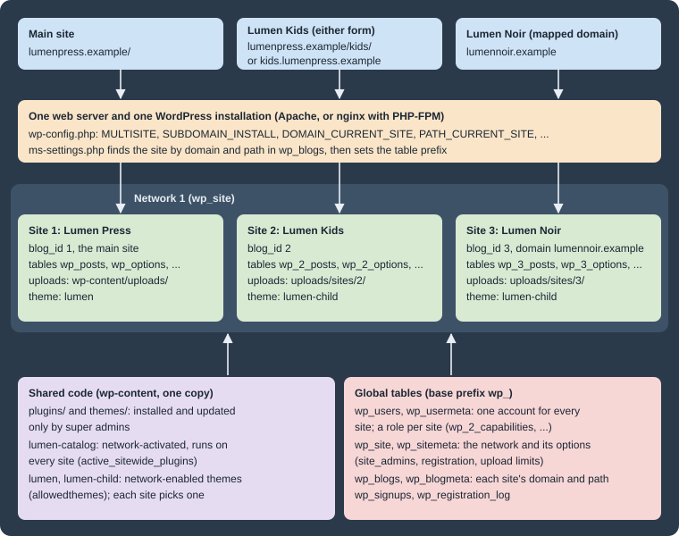

Multisite Networks
|
This content was generated with the assistance of AI and should be verified against the official documentation before being relied on in production. |
A Multisite network is one WordPress installation that serves many sites. The sites share one copy of core, one set of plugin and theme files, one user table and one database, but each has its own content, settings, theme choice and administrators. A super admin runs the whole network from Network Admin. Multisite has been part of core since WordPress 3.0 (2010), when the separate WordPress MU project was merged in.
This page was written against WordPress 7.1.3 (released 2026-10-06; 7.1.4, a security release of 2026-10-28, is the version to run in production), PHP 7.4 minimum and 8.3+ recommended, MariaDB 11.8, Apache 2.4 and nginx 1.29, and WP-CLI 2.12.0, and checked on 2026-10-28. Every command and every result below was run on a fresh 7.1.3 network in containers: once as a subdirectory network (converted from a single site, behind both Apache and nginx) and once as a subdomain network (installed directly). WordPress 7.2 (in beta, due in December 2026) announces no Multisite changes so far.
The running example is the publisher Lumen Press, which adds two imprints, Lumen Kids and Lumen Noir, as sites
of one network. Local examples use lumenpress.test; production names use lumenpress.example and, for the mapped
imprint, lumennoir.example.
When a network is the right tool
A network fits sites that are run by one organization, share code, and are administered centrally, while their content stays separate. It does not make sites share content: a post on Lumen Kids is not visible to Lumen Noir unless code copies or queries it across sites.
| Good fit | Poor fit |
|---|---|
Imprints, brands, departments, campuses or franchise locations with the same plugins and a shared design system |
Sites that need different PHP versions, different plugin versions, or separate release schedules |
Many similar sites created on demand (a blog host, a course platform, a site per event) |
Sites owned by different clients who must not be able to affect each other |
One login for staff who work on several sites |
One site that only needs a second language or a second section (use a multilingual plugin, a custom post type or a page tree instead) |
Central control of updates, security and which themes are allowed |
Sites that must be moved, sold or hosted elsewhere independently; splitting a site out of a network is manual work |
The shared code is both the benefit and the risk. One plugin update reaches every site at once, a fatal error in a
network-activated plugin takes down every site, and every site shares one PHP process pool and one database server.
Many plugins are written and tested for single sites only; check each one for Multisite support before relying on it.
Lumen Press accepts these trade-offs because both imprints use the same lumen-catalog plugin and the lumen theme
family, and the same editors work on all three sites.
How a network is put together

Every request goes through wp-includes/ms-settings.php, which reads the host name and path, looks them up in the
wp_blogs table, and sets the current network and site before plugins load. From then on $wpdb->prefix points at
that site’s tables (wp_ for the main site, wp_2_ for site 2) while users and network data stay in shared
tables.
The vocabulary in the database is historical and inverted. In code and tables a site (wp_site,
get_current_network_id()) is the network and a *blog* (wp_blogs, blog_id) is a site; the admin screens use
network and site. The main site is the site with BLOG_ID_CURRENT_SITE, normally blog ID 1, which keeps the base
table prefix and the base uploads folder.
Subdomains or subdirectories
Each network chooses one addressing scheme when it is created. Individual sites can still be moved to other domains later through domain mapping, described below.
| Subdirectories (path-based) | Subdomains (domain-based) | |
|---|---|---|
Site address |
|
|
|
|
|
DNS |
Nothing beyond the main record |
A record per site, or a wildcard record for on-demand sites |
TLS |
The main certificate covers every site |
A wildcard certificate, or one certificate per name |
Main site permalinks |
Posts get a forced |
No prefix |
Reserved slugs |
|
Banned names only ( |
Login cookies |
Host-only cookies on the main domain |
|
Not allowed when |
The site has posts published more than a month ago (their URLs would clash with site
paths), unless |
The site address is |
Neither scheme works when the WordPress address uses a port other than 80 or 443. For local work, use a name such as
lumenpress.test mapped to 127.0.0.1 in the hosts file rather than localhost:8080.
The one-month rule comes from allow_subdirectory_install(), which looks for a published post older than a month in
wp_posts; the allow_subdirectory_install filter and the ALLOW_SUBDIRECTORY_INSTALL constant override it. The
conversion also replaces the main site’s permalink structure: a site converted with /%postname%/ came out with
/blog/%year%/%monthnum%/%day%/%postname%/, and setting /%postname%/ again stored /blog/%postname%/, so
/hello-world/ answered 404 and /blog/hello-world/ 200. Plan redirects for existing post URLs before converting a
site that already has traffic.
Switching an existing network between the two schemes later means changing SUBDOMAIN_INSTALL, every row of
wp_blogs, the home and siteurl options of each site, URLs in content, the rewrite rules, DNS and certificates.
It is possible but rarely worth it; choose carefully at the start. Lumen Press uses subdirectories for the imprints
(one certificate, one DNS record) and maps Lumen Noir to its own domain.
Enabling Multisite
Preparing the site
Before converting an existing site:
-
Take a full backup of the database and files (see Backups and Disaster Recovery).
-
Make sure pretty permalinks work, because Multisite routing depends on rewrites.
-
Deactivate all plugins; reactivate them one by one afterwards and decide per plugin whether to network-activate it.
-
If WordPress should live in its own directory, move it before enabling Multisite (supported since 3.5, but not afterwards).
-
Settle the final domain and whether it uses
www; changing the main domain later touches every site.
From the dashboard: Network Setup
Multisite is switched on in two steps. First, WP_ALLOW_MULTISITE makes the Tools → Network Setup screen
(wp-admin/network.php) appear. Add it to wp-config.php above the /* That's all, stop editing! */ line:
/* Multisite: shows Tools > Network Setup. */
define( 'WP_ALLOW_MULTISITE', true );On 7.1.3 the screen, titled Create a Network of WordPress Sites, asks for the addressing scheme (it states You
cannot change this later. and that subdomains need a wildcard DNS record), the Network Title and the Network Admin
Email, and shows the Server Address it will use. An option that is not allowed for the site (see the table above) is
not offered. Install creates the network tables and then shows the lines to add to wp-config.php and the rewrite
rules for .htaccess (or the advice to configure nginx). After saving both files, log in again: the login cookies
change.
With WP-CLI
wp core multisite-convert turns an installed single site into a network; wp core multisite-install installs a
network on an empty database in one step. Both write the constants to wp-config.php unless --skip-config is given,
and neither writes rewrite rules.
# An existing single site (Lumen Press) becomes a subdirectory network
wp core multisite-convert --title="Lumen Press Network"Set up multisite database tables.
Added multisite constants to 'wp-config.php'.
Success: Network installed. Don't forget to set up rewrite rules (and a .htaccess file, if using Apache).If WP_ALLOW_MULTISITE was already defined for the dashboard route, the conversion adds a second define() and
every later request logs PHP Warning: Constant WP_ALLOW_MULTISITE already defined. Delete one of the two lines.
A fresh subdomain network, on an empty database, in one command:
wp core multisite-install --subdomains --url=https://lumenpress.test \
--title="Lumen Press Network" --admin_user=admin \
--admin_email=admin@lumenpress.test --admin_password="$WP_ADMIN_PASSWORD" --skip-emailIt printed Created single site database tables., then Warning: Wildcard DNS may not be configured correctly., then
the same two closing lines as the conversion. The warning comes from the installer’s test request to a random subdomain. It is harmless when sites are created
by hand with their own DNS records, or before the wildcard record exists; a working wildcard record makes it disappear.
--subdomains is refused for localhost. Without --subdomains the same command creates a subdirectory network.
The wp-config.php constants
Both routes produce this block (shown for a subdirectory network on the production host):
define( 'WP_ALLOW_MULTISITE', true );
define( 'MULTISITE', true );
define( 'SUBDOMAIN_INSTALL', false );
$base = '/';
define( 'DOMAIN_CURRENT_SITE', 'lumenpress.example' );
define( 'PATH_CURRENT_SITE', '/' );
define( 'SITE_ID_CURRENT_SITE', 1 );
define( 'BLOG_ID_CURRENT_SITE', 1 );
/* That's all, stop editing! Happy publishing. */| Constant | Meaning |
|---|---|
|
Only shows Tools → Network Setup. It can stay or go once the network exists. |
|
Turns the network on. Removing it makes WordPress behave as the main site only. |
|
|
|
The network’s main domain and path. Requests whose host matches no row in
|
|
The network ID ( |
|
The main site’s |
|
A legacy variable from WordPress MU, still written by the installer; the debugging guide checks it. |
Optional constants that matter on a network:
| Constant | Effect |
|---|---|
|
Subdomain networks: where a request for a non-existent site goes. Without it, a visit to
|
|
Cookie scope. Needed for mapped domains on a subdomain network (see domain mapping). |
|
The theme new sites start with ( |
|
Offers subdirectories even for a site with posts older than a month. |
|
Loads the |
|
Defaults to |
The full list of constants is on wp-config.php Reference.
Rewrite rules for Apache
Apache needs mod_rewrite, AllowOverride All for the document root, and
FollowSymLinks or SymLinksIfOwnerMatch; without the last one Apache forbids RewriteRule, and the network shows
"One or more database tables are unavailable". Replace the single-site # BEGIN WordPress block of .htaccess with
the network rules. For a subdirectory network:
# BEGIN WordPress Multisite
RewriteEngine On
RewriteRule .* - [E=HTTP_AUTHORIZATION:%{HTTP:Authorization}]
RewriteBase /
RewriteRule ^index\.php$ - [L]
# add a trailing slash to /wp-admin
RewriteRule ^([_0-9a-zA-Z-]+/)?wp-admin$ $1wp-admin/ [R=301,L]
RewriteCond %{REQUEST_FILENAME} -f [OR]
RewriteCond %{REQUEST_FILENAME} -d
RewriteRule ^ - [L]
RewriteRule ^([_0-9a-zA-Z-]+/)?(wp-(content|admin|includes).*) $2 [L]
RewriteRule ^([_0-9a-zA-Z-]+/)?(.*\.php)$ $2 [L]
RewriteRule . index.php [L]
# END WordPress MultisiteThe optional ([_0-9a-zA-Z-]+/)? group strips the site slug, so /kids/wp-login.php and
/kids/wp-includes/... reach the shared files. A subdomain network uses the same block without that group; only
these three rules differ:
RewriteRule ^wp-admin$ wp-admin/ [R=301,L]
RewriteRule ^(wp-(content|admin|includes).*) $1 [L]
RewriteRule ^(.*\.php)$ $1 [L]The virtual host must answer every name of the network, written in Apache 2.4 syntax:
<VirtualHost *:443>
ServerName lumenpress.example
ServerAlias *.lumenpress.example lumennoir.example
DocumentRoot /var/www/lumenpress
<Directory /var/www/lumenpress>
Options FollowSymLinks
AllowOverride All
Require all granted
</Directory>
SSLEngine on
SSLCertificateFile /etc/ssl/lumenpress/fullchain.pem
SSLCertificateKeyFile /etc/ssl/lumenpress/privkey.pem
</VirtualHost>Rewrite rules for nginx
nginx reads no .htaccess file and needs no mod_rewrite equivalent beyond its own rewrite directive. A
subdirectory network adds three rewrites for requests that do not match a file:
# /etc/nginx/conf.d/lumenpress.conf (subdirectory network)
upstream php {
server 127.0.0.1:9000; # or unix:/run/php/php8.4-fpm.sock
}
server {
listen 80;
server_name lumenpress.example lumennoir.example;
root /var/www/lumenpress;
index index.php;
if (!-e $request_filename) {
rewrite /wp-admin$ $scheme://$host$request_uri/ permanent;
rewrite ^(/[^/]+)?(/wp-.*) $2 last;
rewrite ^(/[^/]+)?(/.*\.php) $2 last;
}
location / {
try_files $uri $uri/ /index.php?$args;
}
location ~ \.php$ {
try_files $uri =404;
include fastcgi_params;
fastcgi_param SCRIPT_FILENAME $document_root$fastcgi_script_name;
fastcgi_pass php;
}
}A subdomain network uses the same file without the if block, and lists the wildcard in server_name:
server_name lumenpress.example *.lumenpress.example lumennoir.example;Both variants pass nginx -t on nginx 1.29. Behind them, with PHP-FPM 8.4, the test network answered as follows (TLS
termination is left out to keep the files short; the
Web Servers: Apache and nginx page adds it):
| Request | Status | Result |
|---|---|---|
|
200 |
Lumen Kids home page |
|
301 |
Redirect to |
|
200 |
The shared |
|
200 |
Lumen Kids home page |
|
302 |
|
The blogs.dir and ms-files.php rules found in older guides apply only to networks created before WordPress 3.5.
Newer networks store uploads in wp-content/uploads/sites/<blog_id>/ and serve them as plain static files.
Creating the Lumen Kids and Lumen Noir sites
Sites are created on Network Admin → Sites → Add Site (address, title, language, admin email) or with WP-CLI. The
--slug becomes the path on a subdirectory network and the subdomain on a subdomain network:
wp site create --slug=kids --title="Lumen Kids" --email=admin@lumenpress.test
wp site create --slug=noir --title="Lumen Noir" --email=admin@lumenpress.test
wp site list --fields=blog_id,urlSource: WP-CLI Commands: wp site create
The commands reported Site 2 created: https://lumenpress.test/kids/ and Site 3 created: https://lumenpress.test/noir/, and wp site list showed blog IDs 1, 2 and 3.
Every WP-CLI command that should act on one site takes --url, for example
wp option get blogname --url=lumenpress.test/kids/. Without it, commands act on the main site. A reserved slug is
refused with Error: The following words are reserved and cannot be used as blog names: page, comments, blog, files, feed, wp-admin, wp-content, wp-includes, wp-json, embed. The dashboard also enforces lowercase letters and digits for
site names; WP-CLI accepted --slug=Noir_2, so scripts should validate slugs themselves.
A new site starts with the default theme, a "Hello world!" post, a sample page and the content defined under New Site
Settings. Its uploads go to wp-content/uploads/sites/2/ (wp_upload_dir() returned that basedir for Lumen Kids).
The tables a network adds
The conversion added six network tables (wp_blogs, wp_blogmeta, wp_site, wp_sitemeta, wp_signups,
wp_registration_log) and each new site added ten tables, from wp_2_commentmeta to wp_2_terms. The users tables
stay global. With the two imprints, wp db tables --network listed 38 tables: 6 network tables, the 12 tables of the
main site and 2 × 10 site tables.
The meaning of each table, the ER diagram and the arithmetic for large networks are on
Database Schema. The network debugging guide still lists a
wp_blog_versions table; WordPress 7.1.3 does not create it.
Network Admin
Super admins reach Network Admin from My Sites in the toolbar (/wp-admin/network/). On 7.1.3 its menu has
Dashboard (with Updates for the whole network and Upgrade Network, which runs database upgrades on every site like
wp core update-db --network), Sites (All Sites, Add Site), Users, Themes and Plugins (each with its installer
and file editor), and Settings (Network Settings, and Network Setup, which shows the configuration lines again).
Sites → Edit has four tabs: Info (the Site Address (URL), registration dates and the Public, Archived,
Spam, Deleted and Mature flags), Users (add or remove users and set their role on that site), Themes (enable
extra themes for that site only) and Settings (every option of the site, as a raw form). Archiving a site keeps it
but answers visitors with HTTP 410 and This site has been archived or suspended.; WP-CLI has matching commands
(wp site archive 3, wp site unarchive 3, wp site spam, wp site deactivate, wp site delete).
Settings → Network Settings holds network options stored in wp_sitemeta, readable with wp site option get:
| Section | Fields | Option names |
|---|---|---|
Operational Settings |
Network Title, Network Admin Email |
|
Registration Settings |
Allow new registrations, Registration notification, Add New Users, Banned Names, Limited Email Registrations, Banned Email Domains |
|
New Site Settings |
Welcome Email, Welcome User Email, First Post, First Page, First Comment and its author, email and URL |
|
Upload Settings |
Site upload space, Upload file types, Max upload file size |
|
Language Settings |
Default Language |
|
Menu Settings |
Enable administration menus: Plugins |
|
On the test network upload_space_check_disabled was 1, so the 100 MB quota per site is not enforced until the
box is ticked. fileupload_maxk limits single files on top of PHP’s upload_max_filesize.
Super admins
A super admin has every capability on every site, including the network-only ones (manage_network,
manage_sites, manage_network_users, manage_network_plugins, manage_network_themes, manage_network_options).
The list of super admin logins is the site_admins network option, not a role:
wp super-admin list
wp super-admin add netops
wp super-admin remove netops
wp network meta get 1 site_admins --format=jsonSource: WP-CLI Commands: wp super-admin
On the test network the list held only admin, stored as ["admin"] in wp_sitemeta.
A site Administrator on a network is a smaller role than on a single site. Checked with user_can() for a user who
is Administrator of Lumen Kids only:
| Capability | Site administrator | Super admin |
|---|---|---|
|
no |
yes |
|
no |
yes |
|
no (yes when Menu Settings → Plugins is enabled) |
yes |
|
no (yes when Add New Users is enabled) |
yes |
|
no |
yes |
|
yes |
yes |
|
yes |
yes |
|
no |
yes |
Because a super admin can run code on every site, keep the list short, require two-factor authentication for those accounts (see Security Hardening), and give day-to-day editors per-site roles instead. Capability checks in plugin code are covered in Multisite Development.
Plugins and themes on a network
Only super admins install, update and delete plugins and themes; the files are shared by every site. There are three ways for plugin code to run:
| Mode | Behaviour |
|---|---|
Network-activated |
Runs on every site, stored in the |
Activated per site |
Runs only where a site admin (if Menu Settings → Plugins allows it) or a super admin activated
it; stored in that site’s |
Must-use ( |
Runs on every site, cannot be deactivated, and only single files at the top level are loaded. Useful for network-wide policy (see Introduction and Architecture). |
Lumen Press network-activates its catalogue plugin, because all three sites publish books, and lets Lumen Noir alone use an extra plugin:
wp plugin activate lumen-catalog --network
wp plugin activate akismet --url=lumenpress.test/noir/
wp plugin list --fields=name,status --url=lumenpress.test/noir/The list reported lumen-catalog as active-network and akismet as active on Lumen Noir only; the network
option active_sitewide_plugins then held lumen-catalog/lumen-catalog.php with its activation timestamp.
Network activation runs the plugin’s activation hook once, in the context of the current site, not on every site. A plugin that creates tables or roles on activation must loop over sites or create them lazily; that code is shown in Multisite Development.
Themes are not activated network-wide; they are network-enabled, which only makes them available. Each site still picks one theme on its own Appearance → Themes screen, which lists only enabled themes. The default theme is enabled when the network is created; others are enabled for the whole network or for one site in Sites → Edit → Themes:
wp theme enable lumen --network
wp theme enable lumen-child --network
wp theme activate lumen-child --url=lumenpress.test/kids/
wp network meta get 1 allowedthemes --format=jsonSource: WP-CLI Commands: wp theme enable
The test network printed {"twentytwentyfive":true,"twentytwentyfour":true} for allowedthemes after enabling
Twenty Twenty-Four, with the default theme already present. wp theme activate does not check that list: it switched
Lumen Noir to a theme that was not enabled. Editing a theme’s files changes every site using it, which is why a child
theme (lumen-child) per imprint is safer than editing lumen in place.
Users across sites
There is one wp_users table for the network. A user who is a member of a site has a role stored in
wp_usermeta under that site’s prefix (wp_capabilities for the main site, wp_2_capabilities for Lumen Kids), plus
primary_blog and source_domain. Being logged in is network-wide (subject to cookie scope), but being a member is
per site: a logged-in user without a role on Lumen Noir who opened its dashboard got HTTP 403 and a page saying they
do not currently have privileges on that site, with links to the dashboards of the sites they do belong to.
The commands below give maria.editor (ID 2), an account created on the single site before it was converted to a
network, the Editor role on Lumen Kids and then take it away again:
wp user set-role maria.editor editor --url=lumenpress.test/kids/
wp user list --url=lumenpress.test/kids/ --fields=ID,user_login,roles
wp user remove-role maria.editor --url=lumenpress.test/kids/set-role on a site where the user has no role adds them to it (Success: Added maria.editor (2) to https://lumenpress.test/kids as editor.); remove-role removes them from the site.
Removing a user from a site keeps the account and their posts; deleting a user is a network action (Network Admin →
Users), which asks who should receive their content on each site. Marking a user as spam sets the spam column that
wp_users gains on Multisite and blocks their login on every site.
New user names on a network are stricter than on a single site: wpmu_validate_user_signup() allows only lowercase
letters and digits, at least four characters. wp user create maria.editor ... fails with Error: Usernames can only contain lowercase letters (a-z) and numbers. Accounts created before the conversion, such as Lumen Press’s
maria.editor and tom.author, keep their names and work normally. New staff on a network need names such as
mariaeditor, or a login by email address.
Registration and spam sign-ups
Allow new registrations (registration) takes four values:
| Value | Effect |
|---|---|
|
Only super admins (and site admins, if Add New Users is enabled) create accounts. |
|
Visitors can register an account at |
|
Logged-in users can create new sites. |
|
Visitors can register an account and a site at once. |
With all, wp-signup.php on the test network offered a Username and Email Address and the choice Gimme a
site! or Just a username, please. Sign-ups wait in wp_signups until the emailed link to wp-activate.php is
followed; wp_registration_log records who created which site from which IP address. Per-site Anyone can register
settings do not apply on a network: Settings → General hides the Membership field when Multisite is on.
Open registration on a network attracts automated sign-ups that create spam sites as well as spam accounts. Keep it at
none unless the network exists to host other people’s sites, and if it must be open:
-
fill Banned Names (names that cannot be used as sites; the defaults include
www,admin,filesandblog) and Banned Email Domains, or restrict sign-ups to the organization’s domain with Limited Email Registrations -
add an anti-spam or CAPTCHA plugin that supports
wp-signup.php, network-activated -
review new sites under Sites and mark abusive ones as spam (
wp site spam <id>), which takes them offline -
on a subdomain network, define
NOBLOGREDIRECTso that unknown subdomains do not land on the sign-up form
Lumen Press keeps none: staff are added by super admins.
Domain mapping
Since WordPress 4.5, a site can use any domain without a plugin. The site’s domain and path are the domain and path
columns of its wp_blogs row, and WordPress looks requests up there. The steps are:
-
Point the new domain’s DNS at the server (an
A/AAAArecord, or aCNAMEto the main host). -
Make the web server answer the name (
ServerAliasorserver_name) and install a certificate for it. -
In Network Admin → Sites → Edit, change Site Address (URL) on the Info tab and save.
For Lumen Noir, saving https://lumennoir.test on that screen updated the wp_blogs row and the site’s home and
siteurl options together, and the new domain served the site:
blog_id domain path url
1 lumenpress.test / https://lumenpress.test/
2 lumenpress.test /kids/ https://lumenpress.test/kids/
3 lumennoir.test / https://lumennoir.test/WP-CLI 2.12 has no command that changes a site’s domain. Updating only the options with wp option update home and
siteurl is not enough: the test site then redirected lumennoir.test to the main site (no wp_blogs row matched)
and answered 404 at its old path. A script must update the row with wp_update_site() (5.1+) and the two options:
# Map site 3 (Lumen Noir) to its own domain
wp eval 'wp_update_site( 3, array( "domain" => "lumennoir.test", "path" => "/" ) );'
wp option update home https://lumennoir.test --url=lumennoir.test
wp option update siteurl https://lumennoir.test --url=lumennoir.test
wp search-replace 'lumenpress.test/noir' 'lumennoir.test' 'wp_3_*' --skip-columns=guid \
--url=lumennoir.test --dry-runAfter the first command, --url uses the new domain, because WP-CLI finds the site the same way as a web request. Remove --dry-run from the last command once its report looks right; it rewrites links in that site’s
content and leaves guid alone.
The old address does not redirect to the new one. On the subdomain test network, noir.lumenpress.test went to the
sign-up page after mapping; on the subdirectory network, /noir/ returned 404. Add a permanent redirect in the web
server for every old address that has been published.
Cookies on mapped domains
On a subdomain network COOKIE_DOMAIN is .lumenpress.test by default. A browser refuses that cookie on
lumennoir.test, and the login form at lumennoir.test/wp-login.php failed with Error: Cookies are blocked or not
supported by your browser. You must enable cookies to use WordPress. The fix from the domain mapping guide, placed
after the network constants:
define( 'COOKIE_DOMAIN', $_SERVER['HTTP_HOST'] );With it, the login worked on lumennoir.test, kids.lumenpress.test and lumenpress.test, each setting cookies for
its own host. The cost is a separate login per site. PHP scripts that load wp-config.php without a web request (WP-CLI
sets HTTP_HOST itself) see an undefined index warning; $_SERVER['HTTP_HOST'] ?? '' avoids it. On a subdirectory
network cookies are host-only already, and mapped domains log in without this line.
A sunrise.php drop-in left over from the old domain-mapping plugin can intercept requests; remove it, and the
SUNRISE constant, before relying on native mapping.
Wildcard DNS and TLS
A subdirectory network needs only the main host’s DNS record and certificate. A subdomain network needs a record for every site; a wildcard record lets new sites work without DNS changes:
; zone lumenpress.example (addresses are documentation ranges)
lumenpress.example. 3600 IN A 203.0.113.10
*.lumenpress.example. 3600 IN CNAME lumenpress.example.
; zone lumennoir.example (a mapped imprint)
lumennoir.example. 3600 IN A 203.0.113.10A certificate for *.lumenpress.example covers one level only (kids.lumenpress.example, not
www.kids.lumenpress.example) and not the bare lumenpress.example, so request both names. Let’s Encrypt issues
wildcard certificates only through the DNS-01 challenge, which needs API access to the DNS provider; HTTP-01 cannot be
used for them. Each mapped domain needs its own certificate (served with SNI on the same IP address). The web server
must also accept the wildcard: ServerAlias *.lumenpress.example in Apache, server_name *.lumenpress.example
in nginx. Lumen Press avoids all of this by using subdirectories plus one mapped domain with its own certificate.
Backing up and moving a network
A backup of a network is a backup of the whole database and the whole wp-content directory, including
uploads/sites/. wp db export without options exports every table registered on the network; a single site’s
tables can be exported for a partial restore:
wp db export lumen-network.sql
wp db export lumen-kids.sql \
--tables="$(wp db tables --url=lumenpress.test/kids/ --scope=blog --format=csv)"Source: WP-CLI Commands: wp db export
On the test network the first file held 38 CREATE TABLE statements and the second 10. A single site’s export does not
include its users (they are in the global tables) or its wp_blogs row; restore it only into the same network.
Retention, off-site copies and restore drills are on
Backups and Disaster Recovery.
Moving a network to a new domain (for example from staging lumenpress.test to production lumenpress.example)
touches DOMAIN_CURRENT_SITE, the wp_site and wp_blogs rows, and every site’s URLs. Run a dry run first:
wp config set DOMAIN_CURRENT_SITE lumenpress.example
wp search-replace 'lumenpress.test' 'lumenpress.example' --network \
--skip-columns=guid,user_email --dry-run --report-changed-onlyTable Column Replacements Type
wp_2_options option_value 3 PHP
wp_blogs domain 2 SQL
wp_options option_value 3 PHP
wp_site domain 1 SQL
wp_sitemeta meta_value 2 PHP
...--network is what includes the tables of every site and the network tables. Search for the bare domain, not
//lumenpress.test: the domain columns of wp_blogs and wp_site hold names without a scheme, and a pattern with
slashes skips them, leaving a network that cannot find its own sites. Without --skip-columns=user_email the run also
rewrites staff email addresses that use the old domain. When wp search-replace itself fails because the network
cannot boot under the old URL, pass --url= with the old main address. The general migration workflow is on
Importing, Exporting and Migrating.
Common errors and pitfalls
| Symptom | Cause and fix |
|---|---|
Main site works, other sites return 404 or the main site’s 404 page |
Rewrite rules missing: the single-site |
"One or more database tables are unavailable. The database may need to be repaired." |
On Apache, |
"Error establishing a database connection" right after enabling the network |
|
Login loops, or Cookies are blocked or not supported by your browser on a mapped domain |
Cookie domain does not match the host. Define |
Sub-domains option missing on Network Setup |
The address is |
Sub-directories option missing |
Published posts older than a month. Define |
Old post URLs of the main site return 404 after conversion |
The forced |
A site admin cannot activate plugins, add users or paste embed scripts |
Expected on a network. Enable Menu Settings → Plugins or Add New Users; |
The handbook’s network debugging guide also lists the SQL to recreate missing wp_site, wp_blogs and site_admins
rows by hand.
Where older books are outdated
| Older claim | Current behaviour (WordPress 7.1) |
|---|---|
Mapping a domain to a network site needs the WordPress MU Domain Mapping plugin, or a host’s own portal |
Native since 4.5: change the Site Address on Network Admin → Sites → Edit, plus DNS, a certificate and, on subdomain
networks, |
A network has a fixed number of tables, as counted in the book |
Six network tables, the 12 main-site tables (users included) and ten tables per extra site; |
Multisite needs more memory, with the book’s figure for the default |
|
Apache rules with |
Apache 2.4 uses |
Uploads live in |
Only for networks created before 3.5; newer networks use |
Related pages
Multisite Development (switch_to_blog(), network options, activation
across sites, WP_Site_Query), Database Schema,
wp-config.php Reference,
Web Servers: Apache and nginx,
Users, Roles and Profiles,
Security Hardening,
Scaling and High Availability,
Debugging, Site Health and Troubleshooting and
WP-CLI. Network activation and per-site uninstall of WooCommerce
extensions are covered in Extension Development.